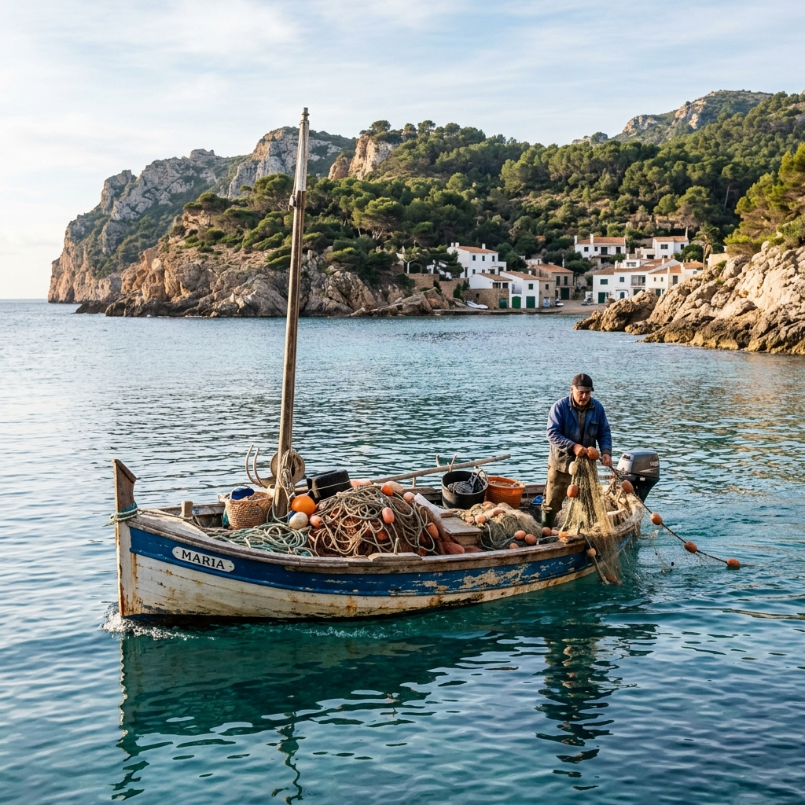
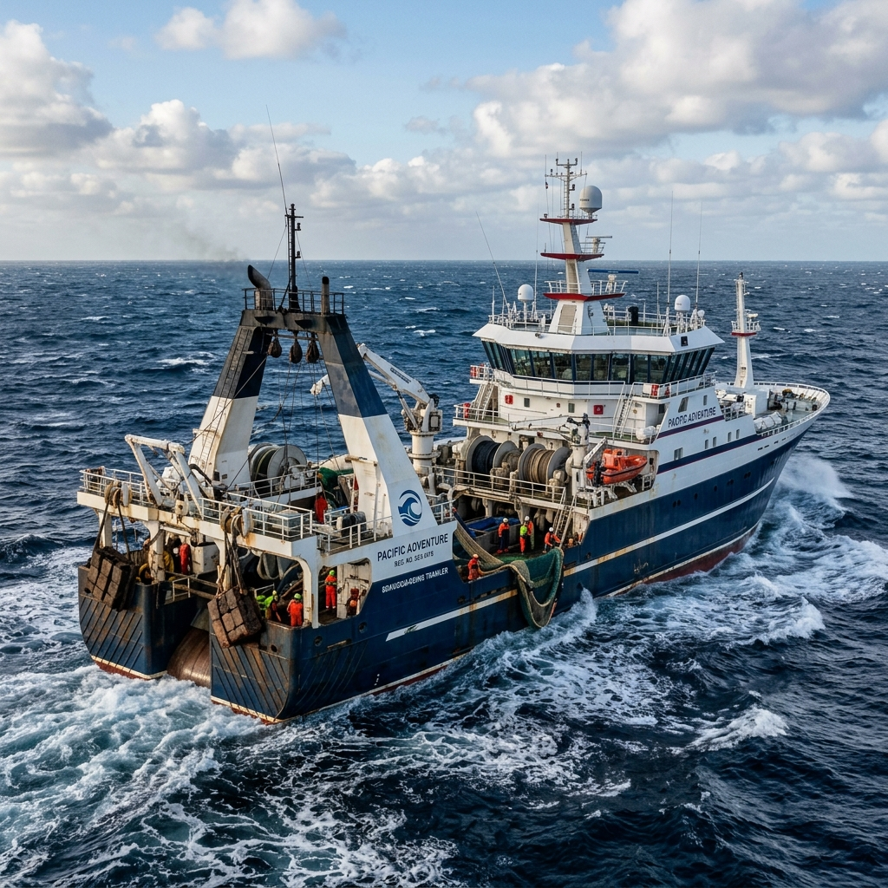
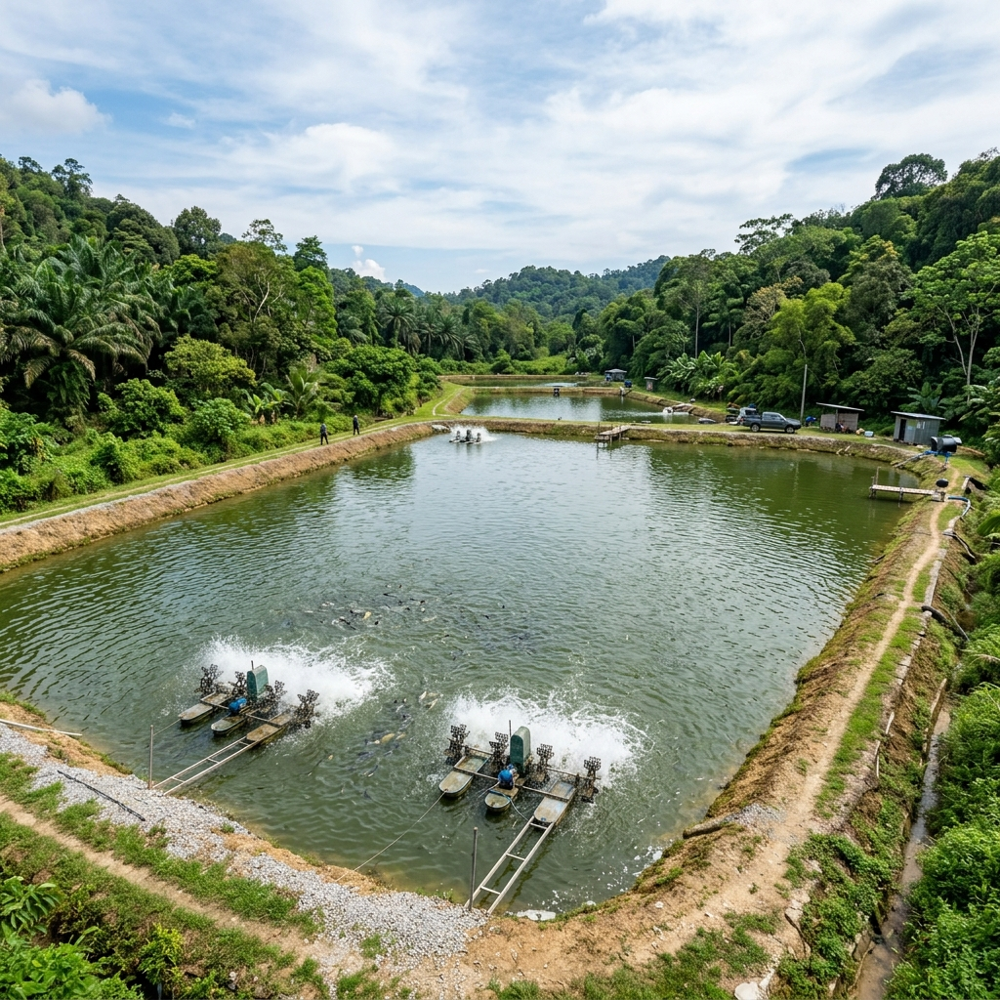
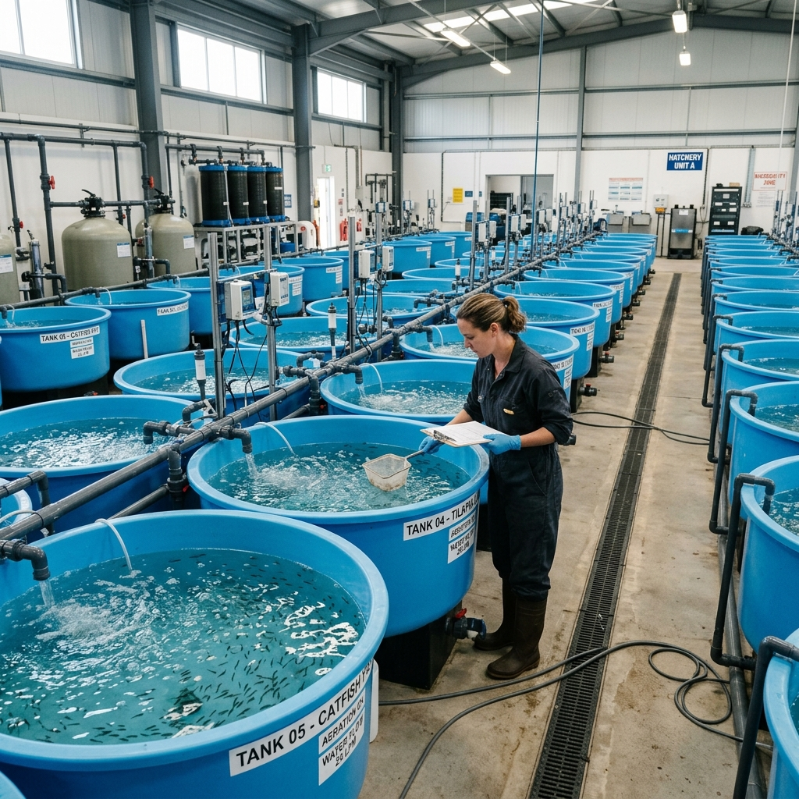
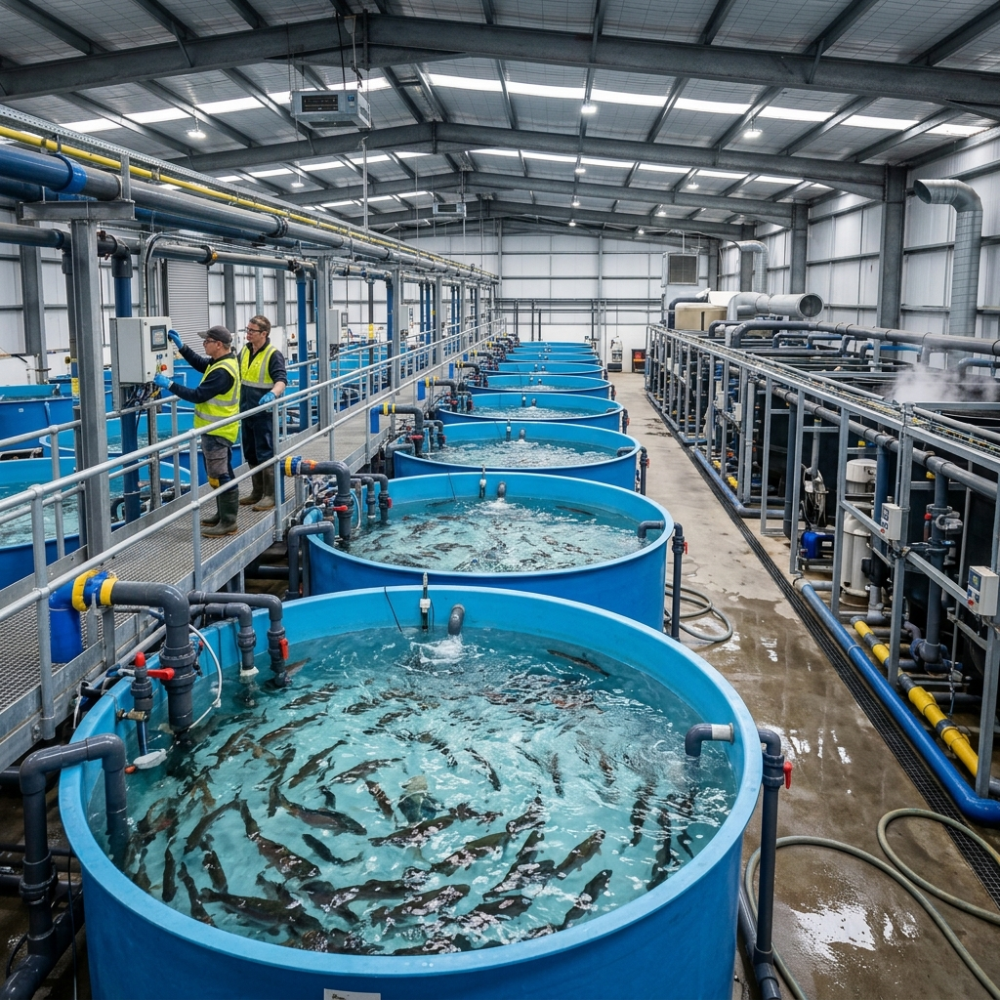
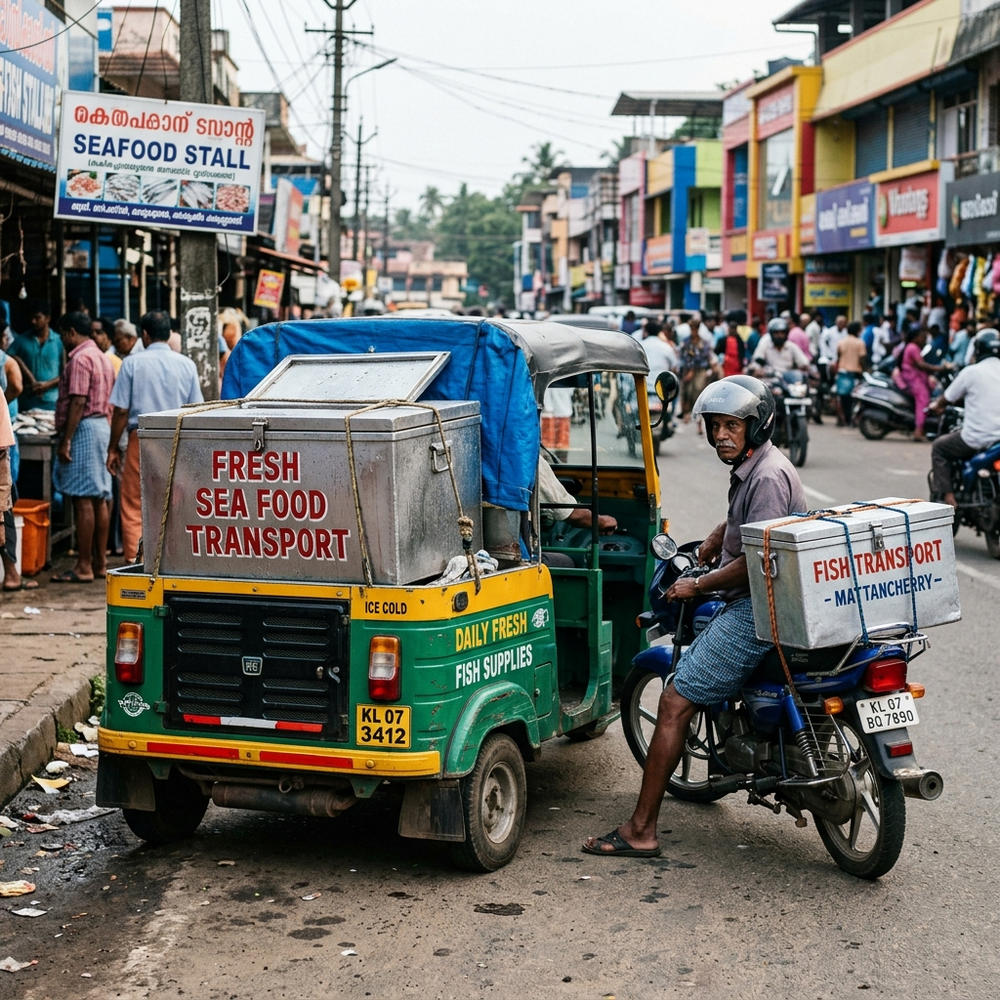
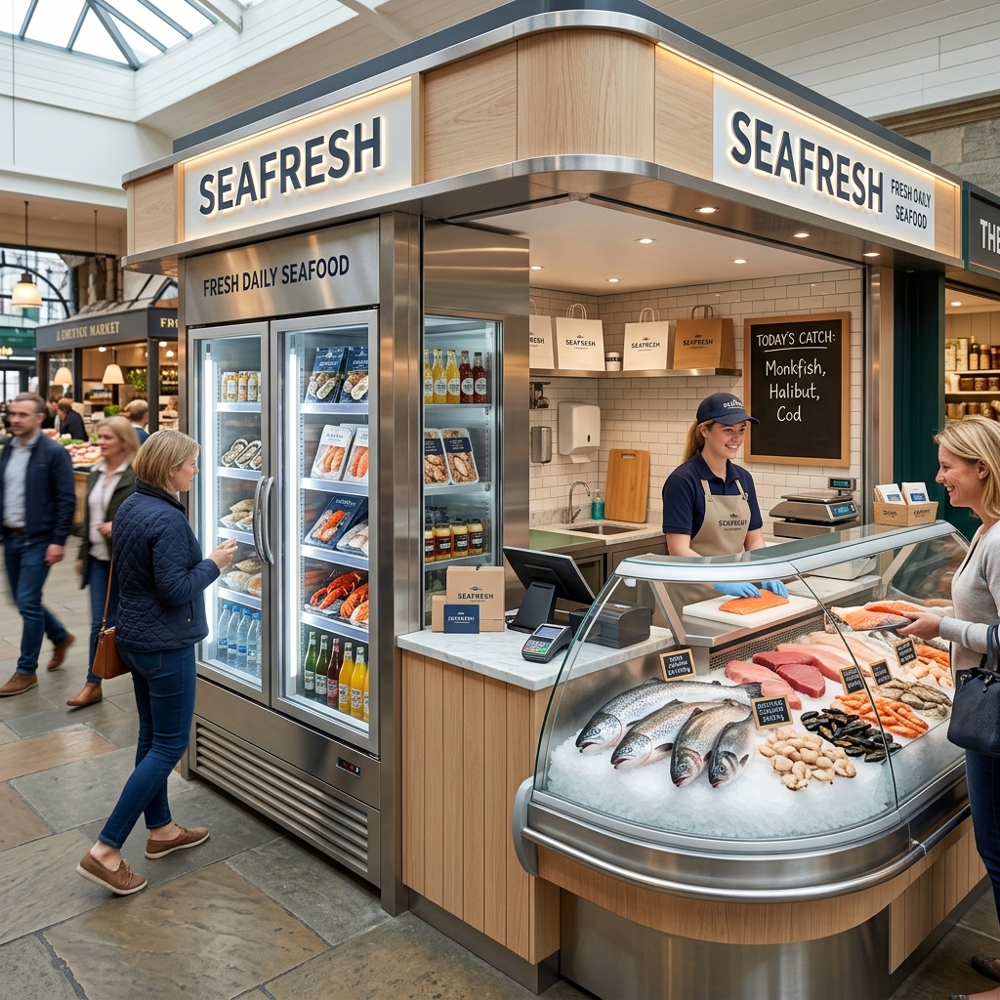
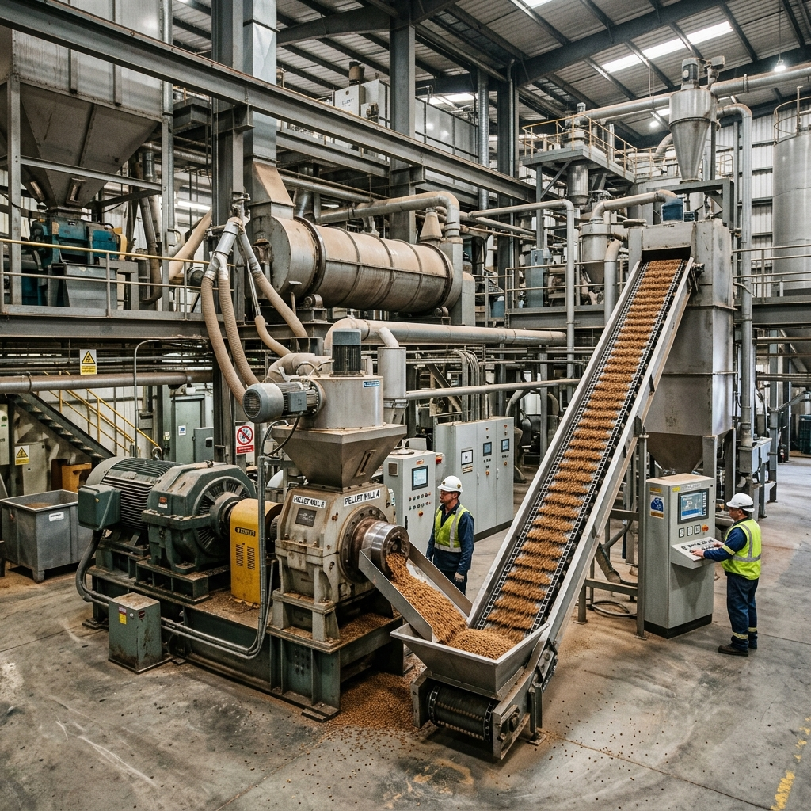
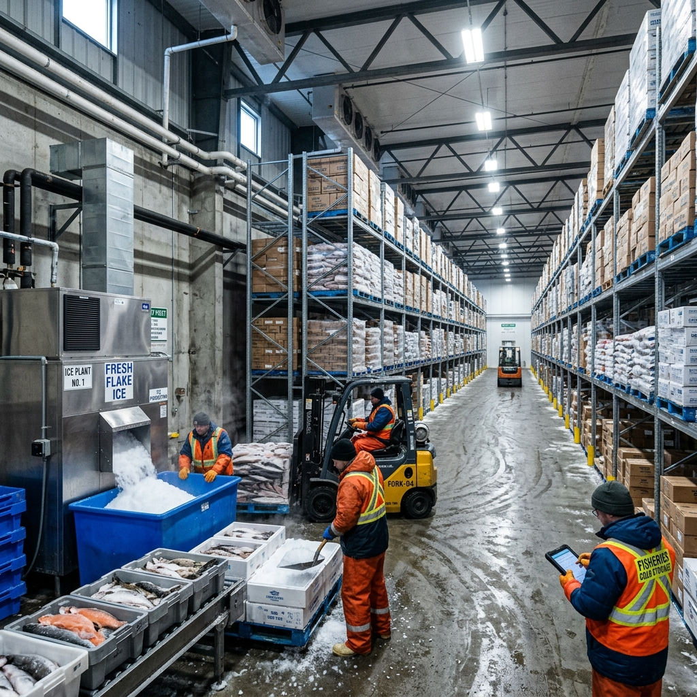

Procurement of FRP Boats up to 10m OAL as a replacement for traditional/ wooden boats including nets.
(i) Beneficiary can apply for the scheme at the corresponding AD offices.
Unit Cost: Upto Rs 4.00 lakh/boat
| Shares | General Category | SC/ ST Women & their Co-Operatives |
|---|---|---|
| Central Gvt. Shares | 24% | 36% |
| State Gvt. Shares | 16% | 24% |
| Beneficiary Shares | 60% | 40% |
- (i) Only Traditional/Artisanal fishermen are eligible for the benefit under this component.
- (ii) Beneficiary should possess valid (a) Ownership Certificate, (b) Registration Certificate under the ReALCraft, (c) Fishing License and (d) Biometric ID fishers ID card.
- (iii) State Govts shall ensure suitable disposal of the old fishing boats(against which new one is replaced).

Assistance for Deep Sea Fishing Vessel size (18-24 m OAL) for Traditional Fishermen and their Societies in Coastal States/ UTs
(i) Beneficiary can apply for the scheme at the corresponding AD offices.
Unit Cost: Actual Cost, with a ceiling of Rs. 80 lakh; 50% subsidy, subject to a maximum of Rs.40 lakh per fishing vessel
| Shares | General Category | SC/ ST Women & their Co-Operatives |
|---|---|---|
| Central Gvt. Shares | 24% | 36% |
| State Gvt. Shares | 16% | 24% |
| Beneficiary Shares | 60% | 40% |
- (i) The applicant shall obtain necessary prior permissions from the concerned State/UT Government and other Competent Authorities for procuring Deep Sea Boat.
- (ii) Beneficiary should possess valid (a) Ownership Certificate, (b) Registration Certificate under the ReALCraft, (c) Fishing License and (d) Biometric ID fishers ID card.

(i) Beneficiary can apply for the scheme at the corresponding AD offices.
Unit Cost: Actual Cost, subject to maximum of Rs. 60 lakh per Fishing Vessel
| Shares | Category |
|---|---|
| State Gvt. Shares | 50% |
| Beneficiary Shares | 50% |
- (i) The applicant shall obtain necessary prior permissions from the concerned State/UT Government and other Competent Authorities for procuring Tuna liner cum Gill Netter.
- (ii) Beneficiary should possess valid (a) Ownership Certificate, (b) Registration Certificate under the ReALCraft, (c) Fishing License and (d) Biometric ID fishers ID card.

(i) Beneficiary can apply for the scheme at the corresponding AD offices.
Unit Cost:Actual Cost, subject to maximum of Rs. 80 lakh per Fishing Vessel
| Shares | Category |
|---|---|
| State Gvt. Shares | 50% |
| Beneficiary Shares | 50% |
- (i) The applicant in the region surrounding Palk Bay shall obtain necessary prior permissions from the concerned State/UT Government and other Competent Authorities for procuring Deep sea Fishing Vessel.
- (ii) Beneficiary should possess valid (a) Ownership Certificate, (b) Registration Certificate under the ReALCraft, (c) Fishing License and (d) Biometric ID fishers ID card.

(boats of appropriate sizes including fishing nets, fish & ice holding boxes etc.).
(i) Beneficiary can apply for the scheme at the corresponding AD offices.
Unit Cost: As per actual cost subject to a ceiling of Rs. 1.00 lakh per unit.
| Shares | General Category | SC/ ST Women & their Co-Operatives |
|---|---|---|
| Central Gvt. Shares | 24% | 36% |
| State Gvt. Shares | 16% | 24% |
| Beneficiary Shares | 60% | 40% |
- (i) Beneficiaries should provide documentary evidence of availability valid fishing license issued by the competent authority.
- (ii) The project proposals of individual beneficiary (consolidated), cooperatives/ collectives shall be routed through the concerned State/ UT Government with proper recommendations.
- (iii) Beneficiaries shall also produce the documentary evidence of availability of fishing rights/ permissions in the reservoirs/tanks etc. from the competent authorities.
- (iv) For Central and State Government organizations/ federations/ corporations/ agencies etc. financial assistance shall be decided on case to case basis in consultation with the concerned.
- (v) The fishing craft/boats may also be shared by a group of fishers/ collectives.
- (vi) Beneficiaries shall be abide by the fishing regulations (if any) on use of size & type of boat/ craft and nets etc.
- (vii) Central assistance shall also be provided for replacement existing boats of more than 5 years old.

(including construction of sluice gates, civil works for water supply and aeration appliances, feed storing shed etc.)
(i) Beneficiary can apply for the scheme at the corresponding AD offices.
Unit Cost:As per actual cost subject to a ceiling of Rs. 7.0 lakh per ha.
| Shares | General Category | SC/ ST Women & their Co-Operatives |
|---|---|---|
| Central Gvt. Shares | 24% | 36% |
| State Gvt. Shares | 16% | 24% |
| Beneficiary Shares | 60% | 40% |
- (i) Beneficiaries shall provide documentary evidence of availability of requisite land free from all encumbrances and financial resources along with necessary clearances/ permissions etc. in the DPR. No funds shall be provided for the land.
- (ii) The constructed ponds shall have a minimum water depth of 1.5m.
- (iii) Central financial assistance shall be restricted to a maximum area of 2 ha for individual beneficiary, 2 ha x number of members for cooperatives/ collectives subject to viability of pond sizes and with a ceiling of 20 ha. for group/collectives. The project proposals in this category shall be routed through the concerned State /UT Government with proper recommendations.

(repair and strengthening of bunds, repair of electrical and water supply works and other accessories/ equipment, de-siltation, repair/ installation of sluice gates, site clearing, dewatering etc., Renovation of MNERGA Ponds And Tanks, New Water Bodies created under various State Govt/Central programme including wetland development department etc., Rejuvenation of Urban/ Semi- Urban/ Rural Lakes/Tanks for Fish Culture )
(i) Beneficiary can apply for the scheme at the corresponding AD offices.
Unit Cost:Rs. 3.5 lakh per ha
| Shares | General Category | SC/ ST Women & their Co-Operatives |
|---|---|---|
| Central Gvt. Shares | 24% | 36% |
| State Gvt. Shares | 16% | 24% |
| Beneficiary Shares | 60% | 40% |
- (i) Beneficiaries shall provide documentary evidence on ownership of the existing ponds/ tanks, financial resources along with necessary clearances/ permissions (if any required) etc. in the DPR.
- (ii) Renovation/repair/de-silting of existing ponds/ tanks, other related civil works etc. may be considered for funding only after 5 years on one time basis.
- (iii) Central financial assistance shall be restricted to a maximum area of 2 ha for individual beneficiary, 2 ha x number of members for cooperatives/ collectives subject to viability of pond sizes and with a ceiling of 20 ha. for group/collectives.
- (iv) The project proposals (except for central Govt organizations/ instates) shall be routed through the concerned State/ UT Government with proper recommendations.

(including construction of sluice gates, civil works for water supply and aeration appliances, feed storing shed etc.)
(i) Beneficiary can apply for the scheme at the corresponding AD offices.
Unit Cost: Freshwater prawn/trout culture: As per actual cost subject to a ceiling of Rs. 2.50 lakh/ha
| Shares | General Category | SC/ ST Women & their Co-Operatives |
|---|---|---|
| Central Gvt. Shares | 24% | 36% |
| State Gvt. Shares | 16% | 24% |
| Beneficiary Shares | 60% | 40% |
- (i) This input cost shall be provided for the beneficiaries who already own a pond/tanks/waterbodies
- (ii) Beneficiaries shall be provided central assistance for input costs for the initial crop only in the newly constructed/ renovated ponds/ tanks.
- (iii) Central assistance for input cost shall be released only after the ponds/ tanks are ready for culture.

(i) Beneficiary can apply for the scheme at the corresponding AD offices.
Unit Cost: As per actual cost subject to a ceiling of Rs. 50 lakh per unit with a minimum capacity of 5 million post larvae per year.
| Shares | General Category | SC/ ST Women & their Co-Operatives |
|---|---|---|
| Central Gvt. Shares | 24% | 36% |
| State Gvt. Shares | 16% | 24% |
| Beneficiary Shares | 60% | 40% |
- (i) Beneficiaries shall provide documentary evidence of availability of requisite land free from all encumbrances and financial resources, necessary clearances/ permissions etc. with full technical details including bio-security measures in the DPR. No funds shall be provided for the land.
- (ii) Fisher cooperatives/ collectives shall be eligible for central financial assistance and should route their proposals through the concerned State/ UT Government with proper recommendations.
- (iii) Proposals from Central and State Government organizations/ federations/ corporations/ agencies etc may be submitted directly to NFDB.
- (iv) Beneficiary should have the requisite technical expertise and trained manpower for construction, operation and management of the hatchery.
- (v) The hatchery shall include brooder pond, PL rearing tanks, small laboratory, water & electric supply, bio-security arrangements and required infrastructure facilities etc.
- (vi) Beneficiaries organizations shall ensure supply of seed produced from the central funded hatcheries to farmers at affordable/ reasonable price.
- (vii) Post construction operation, management and maintenance of the hatcheries shall be carried out in a satisfactory manner by the beneficiaries at their own costs.
- (viii) NFDB shall also directly set up & manage the hatcheries with commercial approach at suitable location.

Low cost RAS: 5 x 5 x 4 m cement tanks (100 m3 each), minimum production capacity of 2 tonnes fish per tank
(i) Beneficiary can apply for the scheme at the corresponding AD offices.
Unit Cost: Medium Size RAS - As per actual, with a ceiling of Rs. 50.00 lakh per unit of minimum 8 tanks. The unit of Medium Size RAS includes about Rs. 31 lakh capital cost and Rs. 19 lakh as operational cost. The central assistance is also provided against the operational cost as one time.
| Shares | General Category | SC/ ST Women & their Co-Operatives |
|---|---|---|
| Central Gvt. Shares | 24% | 36% |
| State Gvt. Shares | 16% | 24% |
| Beneficiary Shares | 60% | 40% |
- (i) Beneficiaries shall submit self contained Detailed Project Report (DPR) with full justification & technical details etc.
- (ii) Beneficiaries shall provide documentary evidence of availability of requisite land free from all encumbrances, financial resources, necessary clearances/ permissions etc. in the DPR. No funds shall be provided for the land.
- (iii) DPRs shall also contain details of anticipated direct & indirect employment generation to local populations, enhancement of fish production, specific time lines for the implementation of the project etc.
- (iv) Project proposals of cooperatives/ collectives/ omnibus/ entrepreneurs shall be submitted to NFDB. The central assistance to these beneficiaries will be provided as back-ended subsidy.
- (v) For Central and State Government organizations/ federations/ corporations/ agencies etc., quantum of financial assistance shall be decided on case to case basis in consultation with the concerned.
- (vi) Post construction operation, management and maintenance of the RAS shall be carried out in a satisfactory manner by the beneficiaries at their own costs.
- (vii) NFDB shall also set up manage the RAS with commercial approach at suitable location.
- (viii) Infrastructure created should have essential requirements for RAS including water treatment units.

(i) Beneficiary can apply for the scheme at the corresponding AD offices.
Unit Cost: Bicycle - As per actual with a ceiling of Rs. 3000/- per unit.
| Shares | General Category | SC/ ST Women & their Co-Operatives |
|---|---|---|
| Central Gvt. Shares | 24% | 36% |
| State Gvt. Shares | 16% | 24% |
| Beneficiary Shares | 60% | 40% |
- (i) Maintenance & operational costs of the fish transport vehicles shall be met by the beneficiaries at their own cost.
- (ii) Government of India shall not be responsible for any losses incurred on procurement, operation, maintenance and management of the fish transport facilities.
- (iii) Beneficiaries should ensure that fish transport facilities are maintained in operational condition.
- (iv) Beneficiaries shall be abide by rules/regulations, if any imposed by the concerned State/UT as well as Central Government on maintenance & operation of the fish transport facilities.
- (v) Beneficiaries shall ensure that the fish transport vehicles/facilities procured under the scheme will be used only for transport of fish and fisheries related items and not for any other purposes.
- (vi) In case, it is found at any point of time that the fish transport vehicles procured under the scheme are used for other than the fisheries purposes, the Government of India will recover the entire central assistance with interest from the beneficiaries.
- (vii) Beneficiaries will display permanently to the effect that the fish transport vehicle is procured with financial assistance from the Government of India, Ministry of Agriculture, Department of Animal Husbandry, Dairying and Fisheries.

For Opening up Fresh Fish or Dry Fish Stalls, Fishing sales in Baskets
Beneficiary can apply for the scheme with Project Officers � FISHFED at the corresponding AD offices.
Unit Cost:Rs 15,000/- per head for group of 5 fisherwoman
| Shares | Category |
|---|---|
| State Gvt. Shares | 100% |
- (i)The 5 fisherwoman to open a joint account with FISHFED Project Officers.
- (ii) The fisherwoman gets Rs 15,000 /- for a Lock in period of 1 year and can open up Fresh Fish or Dry Fish Stalls, Sell Fish in Baskets.
- (iii) Weekly once, the fisherwoman to pay back Rs 350/- per head for a period of 52 weeks to Project Officer.
- (iv) After 1 year, the fisherwoman can renew the scheme.

Kiosk along with one fish storage/ display cabin, one visi cooler, weighing machine, facilities/ utensils for fish cutting cleaning facilities
(i) Beneficiary can apply for the scheme at the corresponding AD offices.
Unit Cost: Rs.100 lakh for a fish market of 10 unit retail outlets, Rs.200 lakh for a fish market of 20 unit retail outlets & Rs.500 lakh for a fish market of 50 unit retail outlets
| Shares | General Category | SC/ ST Women & their Co-Operatives |
|---|---|---|
| Central Gvt. Shares | 24% | 36% |
| State Gvt. Shares | 16% | 24% |
| Beneficiary Shares | 60% | 40% |
- (i) Beneficiaries shall provide documentary evidence of availability of requisite land (wherever required) free from all encumbrances and financial resources along with necessary clearances/ permissions(wherever required) etc. in the DPR. No funds shall be provided for the land.
- (ii) Cost estimate for construction of fish retail outlet/kiosk shall be based on the latest SoRs admissible in the project area, and cost estimate for mobile outlet shall be based on prevailing market rates.
- (iii) The post-construction operational and maintenance costs of the fish retail outlet/kiosk/ mobile fish retail outlet shall be borne by the beneficiaries.
- (iv) The beneficiaries shall submit self contained proposals together with documentary evidences in respect of (i) to (iii) above.
- (v) The proposals shall be routed through the concerned State Governments/ UTs with clear recommendation.
- (vi) Fish retail outlet/kiosk shall be of a minimum floor area of 100 Sq.ft (static).
- (vii) Priority shall be given to SCs / STs/ women / unemployed youth.

Modern hygienic fish market with a minimum of 10 retail outlets, 20 retail outlets, and 50 retail outlets units with common cold storage facility, waste collection & disposal units, fish cleaning and dressing space, auctioning platforms water and power supply facilities etc.
(i) Beneficiary can apply for the scheme at the corresponding AD offices.
Unit Cost: Bicycle - As per actual with a ceiling of Rs. 3000/- per unit.
| Shares | General Category | SC/ ST Women & their Co-Operatives |
|---|---|---|
| Central Gvt. Shares | 24% | 36% |
| State Gvt. Shares | 16% | 24% |
| Beneficiary Shares | 60% | 40% |
- (i) Beneficiaries shall provide documentary evidence of availability of requisite land free from all encumbrances and financial resources along with necessary clearances/ permissions etc. in the DPR. No funds shall be provided for the land.
- (ii) The beneficiaries shall complete the planning, designing of the market facilities and cost estimates etc. through professionals in the subject.
- (iii) Cost estimates shall be based on the latest SoRs admissible in the project area and prevailing market rates.
- (iv) The post-construction operational and maintenance costs of the infrastructure facility shall be borne by the beneficiaries.
- (v) The beneficiaries shall submit self contained proposals together with documentary evidences in respect of (i) to (iv) above.
- (vi) The beneficiaries shall confirm that all operational and maintenance costs of the modernized plant/infrastructure facility shall be borne by them.
- (vi) The proposals shall be routed through the concerned State Governments/ UTs with clear recommendation.
- (vii) NFDB shall take up development and management of fish markets on commercial approach at feasible locations.

(capacity 1 to 5 quintals/day)
(i) Beneficiary can apply for the scheme at the corresponding AD offices.
Unit Cost: As per actual cost subject to a ceiling of Rs. 10 lakh per Unit
| Shares | General Category | SC/ ST Women & their Co-Operatives |
|---|---|---|
| Central Gvt. Shares | 24% | 36% |
| State Gvt. Shares | 16% | 24% |
| Beneficiary Shares | 60% | 40% |
- (i) Beneficiaries shall submit self contained Detailed Project Report (DPR) with full justification & technical details of the plant etc.
- (ii) Beneficiaries shall provide documentary evidence of availability of requisite land free from all encumbrances, financial resources, necessary clearances/ permissions etc. in the DPR. No funds shall be provided for the land.
- (iii) Beneficiaries organizations shall ensure supply of fish feed produced from the central funded feed mill plants to farmers at affordable/ reasonable price.
- (iv) Post construction operation, management and maintenance of the feed mills shall be carried out in a satisfactory manner by the beneficiaries at their own costs.
- (v) The project proposals of cooperatives/ collectives/ entrepreneurs shall be routed through the concerned State/ UT Government with proper recommendations.
- (vi) The Central and State Government organizations/ federations/ corporations/ agencies etc., shall submit the proposals directly to DADF and the financial assistance shall be decided on case to case basis in consultation with the concerned.
- (vii) NFDB shall also directly set up the feed mill plants with commercial approach at suitable location.

(of a minimum capacity of 10 ton/day or more)
(i) Beneficiary can apply for the scheme at the corresponding AD offices.
Unit Cost: As per actual, with a ceiling of Rs. 2 Crore/Unit
| Shares | General Category | SC/ ST Women & their Co-Operatives |
|---|---|---|
| Central Gvt. Shares | 24% | 36% |
| State Gvt. Shares | 16% | 24% |
| Beneficiary Shares | 60% | 40% |
- (i) This component will be implemented by NFDB with commercial approach.
- (ii) The project proposals of cooperatives/ collectives/ omnibus/ entrepreneurs shall be submitted to NFDB. The central assistance to these agencies will be provided as back-ended subsidy.
- (iii) Beneficiaries shall submit self contained Detailed Project Report (DPR) with full justification & technical details of the plant etc.
- (iv) Beneficiaries shall provide documentary evidence of availability of requisite land free from all encumbrances, financial resources, necessary clearances/ permissions etc. in the DPR. No funds shall be provided for the land.
- (v) Beneficiaries organisations shall ensure supply of fish feed produced from the central funded feed mill plants to farmers at affordable/ reasonable price.
- (vi) Post construction operation, management and maintenance of the feed mills shall be carried out in a satisfactory manner by the beneficiaries at their own costs.
- (vii) The Central and State G o v e r n m e n t organizations/ federations/ corporations/ agencies etc., shall submit the proposals directly to NFDB and the financial assistance shall be decided on case to case basis in consultation with the concerned.

(i) Beneficiary can apply for the scheme at the corresponding AD offices.
aa Unit Cost:Rs.2.50 lakh per ton
| Shares | General Category | SC/ ST Women & their Co-Operatives |
|---|---|---|
| Central Gvt. Shares | 24% | 36% |
| State Gvt. Shares | 16% | 24% |
| Beneficiary Shares | 60% | 40% |
- (i) Beneficiaries shall provide documentary evidence of availability of requisite land free from all encumbrances and financial resources along with necessary clearances/ permissions etc. in the DPR. No funds shall be provided for the land.
- (ii) Cost estimates shall be based on the latest SoRs admissible in the project area and prevailing market rates.
- (iii) The beneficiaries shall certify that all operational and maintenance costs of the infrastructure facilities shall be borne by them in future.
- (iv) The beneficiaries shall submit self contained proposals together with documentary evidences in respect of (i) to (ii) above.
- (v) The proposal shall be routed through the concerned State Governments/ UTs with clear recommendation.

(i) Beneficiary can apply for the scheme at the corresponding AD offices.
bbb Unit Cost:Rs.2.50 lakh per tonne
| Shares | General Category | SC/ ST Women & their Co-Operatives |
|---|---|---|
| Central Gvt. Shares | 24% | 36% |
| State Gvt. Shares | 16% | 24% |
| Beneficiary Shares | 60% | 40% |
- (i) The broad items for renovation/modernization of the existing plants shall include civil works of the existing building, replacement of plants & machineries, electrification & water supply & sanitation works etc., with a view to enhance the efficacy of the existing plant.
- (ii) The beneficiaries should have the ownership of the existing infrastructure plant/facilities.
- (iii) Renovation/modernization of existing & operational plants of minimum 10 years old only may be considered for funding on one time basis.
- (iv) The beneficiaries should clearly indicate the source of balance funding for the project.
- (v) Cost estimates shall be based on the latest SoRs admissible in the project area and prevailing market rates.
- (vi) The beneficiaries shall confirm that all operational and maintenance costs of the modernized plant/infrastructure facility shall be borne by them.
- The beneficiaries shall submit self contained proposals together with documentary evidences in respect of (ii) to (vi) above.
- (viii) The proposals shall be routed through the concerned State Governments/ UTs with clear recommendation.